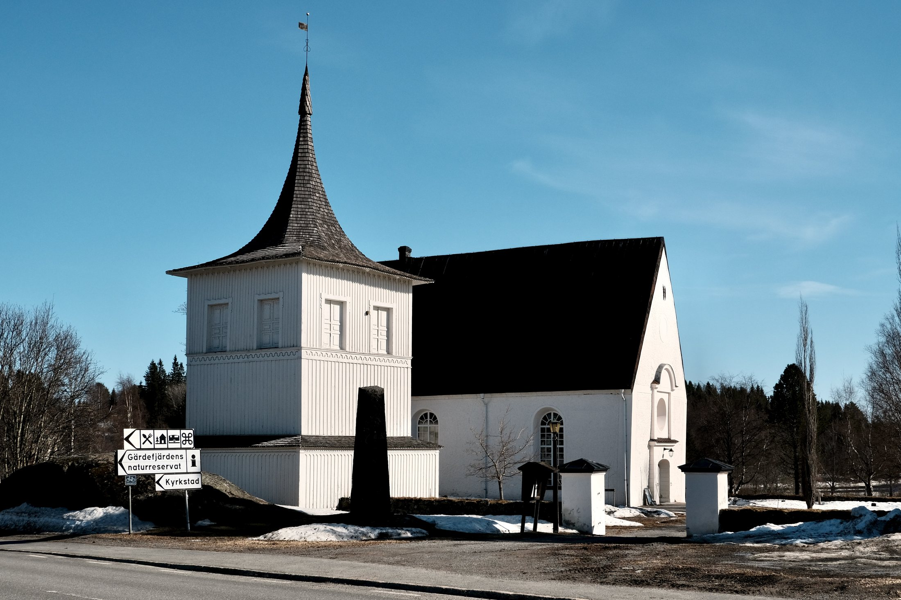
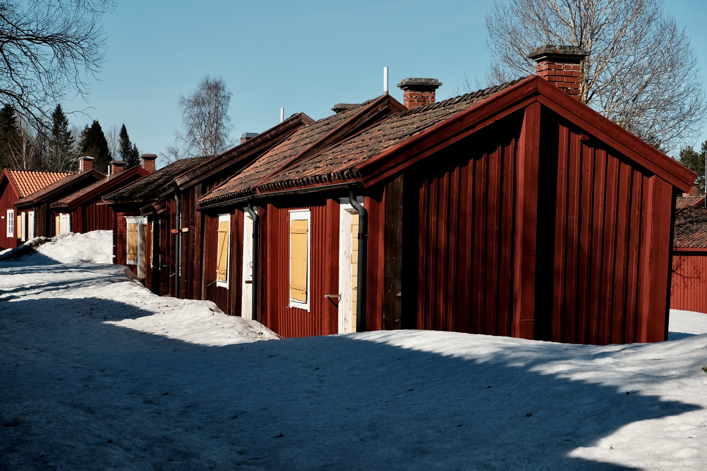

Lövånger Church stands in a quiet part of Västerbotten, surrounded by open light, snow traces, road signs, and the stillness of early spring. The first impression is simple and clear: white walls, a dark roof, a wooden bell tower, and a landscape that feels calm rather than monumental. Nothing here feels staged. The place carries its history with restraint.

From another angle, the church appears more connected to its surroundings. The bell tower, the patches of snow, and the road leading past the site all place the building within everyday life. It is not only a historic object, but part of a lived landscape — a church beside roads, trees, signs, and the seasonal change of northern Sweden.

The church town beside the church
Close to the church, Lövånger Kyrkstad preserves another layer of the place. The red wooden cottages form a small historic church town, built around the practical and social life connected to church visits. Their scale is modest, but their presence is strong: timber walls, small windows, yellow doors, snow-covered paths, and the deep red color so closely associated with rural Sweden.

Individual cottages reveal the character of the church town more closely. A small red building stands on rock, reached by a simple wooden stair. Its yellow door and compact form give the place a human scale. The architecture is not decorative in a grand sense; its beauty comes from use, weather, material, and time.

Wood, color, and weather
The details are as important as the wider views. A weathered shutter, peeling yellow paint, white trim, and red timber show how the buildings have aged in place. These surfaces make the history feel physical. They are not polished smooth; they hold marks of climate, repair, use, and exposure.

In Lövånger, history feels less like a monument and more like a settlement of wood, snow, light, and memory.
What remains after leaving Lövånger is the clarity of the place: the white church, the red cottages, the dark roofs, and the cold brightness of spring. It is a quiet historical landscape, built from practical forms and enduring materials. Its atmosphere comes from simplicity — and from the way each building still seems to belong exactly where it stands.